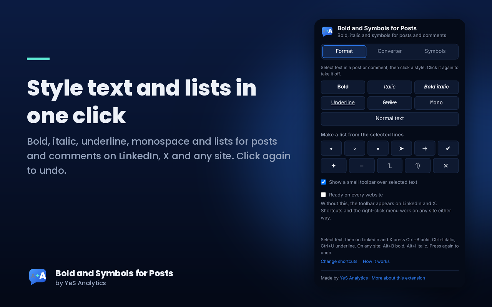
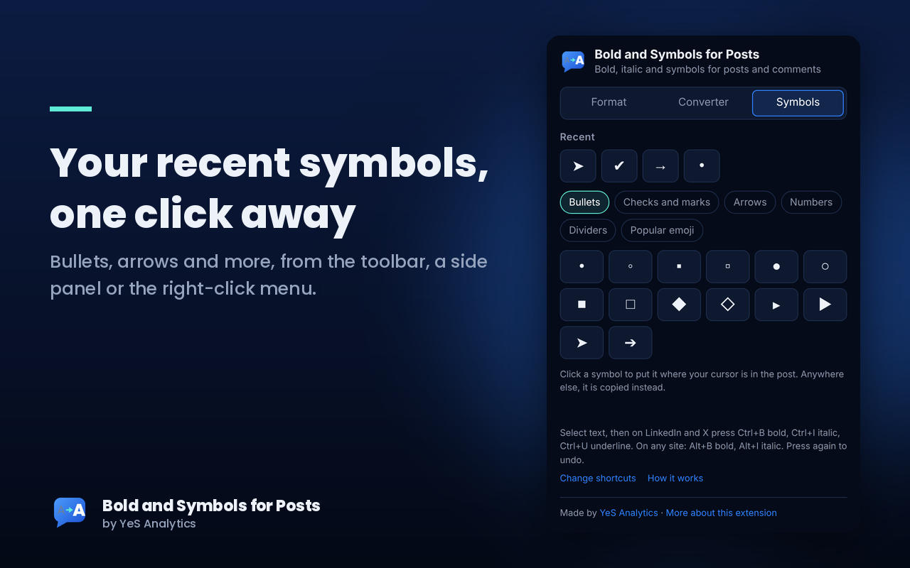
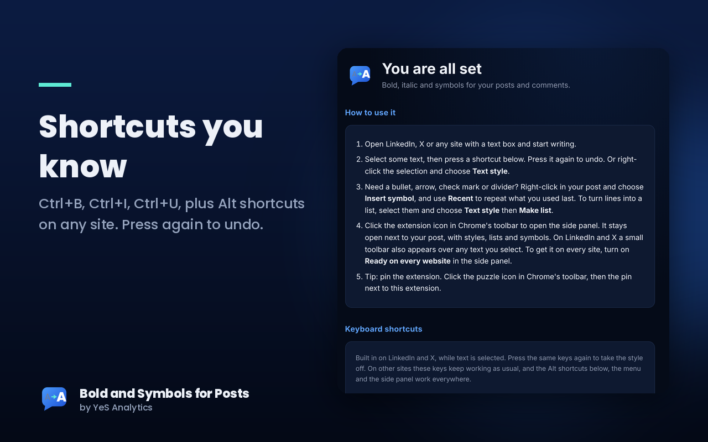

Most post boxes on LinkedIn, X and other sites have no bold or italic button. This extension adds them, plus underline, strikethrough, bullets, arrows and other symbols. Select text, press a shortcut, done.
Free. No sign-up. No data collected.

Three small things that make posts easier to write and easier to scan.
Select text in a post or comment and make it bold, italic, underlined, struck through or monospace. Press the same style again to take it off. Turn selected lines into bulleted or numbered lists.
Bullets, arrows, check marks, numbers, dividers and popular emoji. A Recent item in the right-click menu repeats whatever you used last, so repeat jobs take one click.
Click the extension icon to open a side panel that stays beside your post. A small toolbar also appears over selected text. Or use the keys you already know: Ctrl + B bold, Ctrl + I italic, Ctrl + U underline. Press again to undo.


It takes about a minute.
Prefer other keys? Alt + B and Alt + I work too, and you can change them to anything you like. Open chrome://extensions/shortcuts in Chrome's address bar to set your own.
Yes. There is no sign-up, no ads and no paid tier.
No. It works entirely inside your browser and sends nothing anywhere. It reads only the text you select, and only when you use it. Read the privacy policy.
The extension is ready on LinkedIn and X as soon as the page opens, and works on any other site with a shortcut, the right-click menu or the side panel. If you want the small toolbar everywhere, switch on Ready on every website in the side panel. It runs in desktop Chrome. Chrome on phones does not support extensions, so on mobile use the web converter. The styled text is made of ordinary Unicode characters, so it also shows correctly when pasted into most apps and sites, for example Facebook, Instagram or WhatsApp.
The styled letters are regular Unicode characters. A few fonts or older devices do not include them, so a reader may see boxes instead of letters. This is rare on modern devices.
YeS Analytics. Questions or ideas: info@yes-analytics.com.